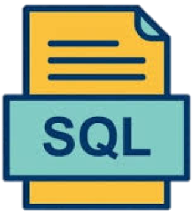
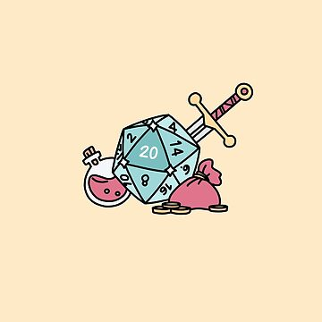

About Me
Hi, I'm Alex, I am a strategic problem-solver who bridges data, psychology, and technology to drive meaningful organizational change.
With a Master’s in Industrial-Organizational Psychology from the University of Maryland and leadership experience at NASA,
I’ve managed complex programs focused on workforce analytics, strategic planning, and operational performance.
My foundation in people science and process improvement informs everything I build, from dashboards to full-scale systems.
At NASA, I led cross-functional initiatives to improve forecasting, hiring strategy, and program delivery. I developed tools in
Power BI, Python, and SQL; automated workflows with Alteryx; and collaborated across engineering, finance, and IT.
Now, I’m expanding my impact by growing my skills as a full-stack developer, combining front-end design and back-end logic to create user-friendly,
data-powered applications. My goal is to build tools that not only visualize insights, but deliver them where they matter most in the
hands of teams, decision-makers, and everyday users.


I'm especially drawn to projects that sit at the intersection of people, systems, and scalable design. Whether I’m managing a team,
analyzing a workforce, or coding an interface, I focus on empowering others through clarity, usability, and purpose. Outside of work,
you can find me spending time with family, playing soccer, or immersed in a D&D campaign.

Projects
Project 1: Business Management and Performance Office Development
During a major organizational shift from decentralized HR functions to an enterprise-wide model, I was tasked with establishing a Business
Management and Performance Office to support change management efforts. I collaborated closely with teams across Finance, Procurement,
Workforce Planning, and Accountability to break down silos and identify operational synergies. By designing and implementing comprehensive
operational performance and reporting frameworks, including a risk management process, I enhanced transparency and improved decision-making
across the organization.
Skills: Organizational Design, Business Acumen, Program Management, Change Management, Organizational Development, People Management, Operational Reporting, KPIs, Risk Management
Project 2: Workforce Analytics Dashboard
To address the challenge of fragmented workforce data and inefficient reporting, I developed an interactive Workforce Analytics Dashboard
using Power BI. I integrated data from multiple HR systems and automated data refresh processes with Python, streamlining reporting workflows.
This solution empowered leadership with real-time hiring insights, enabling more accurate workforce planning and reducing manual reporting
efforts by 75%.
Project 3: NASA Workforce Optimization & Reshaping Initiative
Handpicked by C-suite leadership to lead a strategic Workforce Optimization and Reshaping initiative, I managed cross-functional collaboration
with Finance, Procurement, and HR to gather and validate complex workforce and financial data. I spearheaded scenario planning and workforce
modeling efforts to forecast organizational impacts. The initiative culminated in an interactive dashboard that provided leadership with
actionable insights, driving informed strategic workforce decisions and optimizing resource allocation.